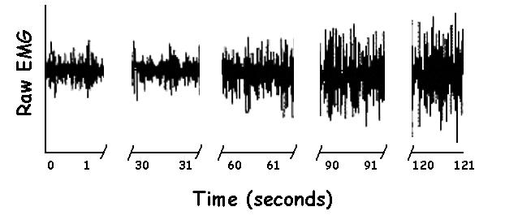
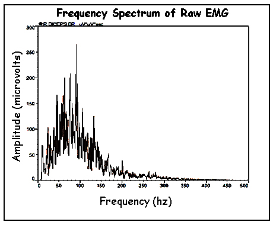
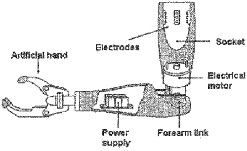
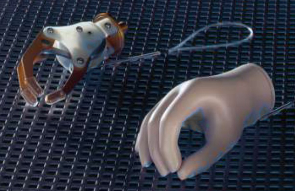

Electromyography (continued)
Assessment of Fatigue:
The previous page showed how isometric muscle force could be estimated from EMG. It was stated that this only applied to non-fatigued muscle. In this section we look at how EMG changes with fatigue and how it can be a useful tool in industry.

Amplitude changes:
The figure to the right shows the raw EMG of a subject holding a sustained isometric contraction for two minutes. The task was a submaximum effort of about 50% MVC and resulted in a fairly low level of EMG at the beginning. The subject was able to maintain the force throughout the two minute task but we can see that the EMG started to increase after 60 seconds. The figure has been compressed by only looking at 1 second intervals during the trial in order to make the increase in EMG more obvious. After 120 seconds, the subject was exerting their maximum effort just to maintain the submaximal force. They recruited more motor units and increased the firing rates of all motor units to compensate for the loss of contractility due to fatigue.

Frequency changes:
Electromyographers can also examine the frequency content of the raw EMG signal to assess fatigue. A spectral analysis of raw EMG shows that most of the signal lies between 10 and 250 hz. See the Frequency Domain Processing Lab for more on the topic of frequency domain signal processing. Briefly, it is a process of breaking down a time domain signal into frequency components. This allows the biomechanist to see noise or other features not easily recognized in the more traditional time domain plots.

An average plot of this sprectrum is shown to the right. A good measure of the EMG frequency distribution is given by the "median frequency" which divides the distribution into two equal halves by area. The figure below shows this for a fresh muscle in Blue and for a fatigued muscle in red. We can see that the area under the red curve is larger due to the increased amplitude of the EMG signal noted earlier. But we can also see that the median frequency has also shifted to a lower frequency. The reason for the shift to lower frequencies is due to the slowing of conduction velocity of the action potentials along the muscle fibers. Conduction velocity slows due to lactic acid accumulation with fatigue.
Tremor and motor unit synchronization:
Another phenomenon that is often present during fatigue is muscle tremor. Under normal conditions, the CNS utilizes asynchronous firing of many motor units for a smooth generation of force. However, at maximum efforts and extreme fatigue, the motor units tend to fire more synchronously which results in tremor which can be seen as visable shaking:
In conclusion, biomechanics uses EMG to assess fatigue in industry. Most industrial tasks are repeated sub-maximal efforts. As we can see in the figures above, EMG shows signs of fatigue before the force changes or the task can no longer be completed. Therefore, the use of EMG allows ergonomists to see when fatigue begins for a given task and design the work place that allows either a rest or a change in activity to keep the muscles from becoming fatigued..
Myoelectric Prosthetics
Most prosthetic limbs for upper extremity amputees used passive hooks or body-powered clasping mechanisms. The use of externally powered prosthetics were too heavy due to the weight of motors, battery power, etc to be used. Today, the weight is less of an issue (due to micro electronics and lithium batteries) and muscles in the residual limb can be used for control. The patient must be able to produce 10-15 microvolts of EMG to activate the system.
Electrodes are placed strategically. In the case of trans-radial amputees, electrodes are placed over wrist and finger flexor muscle groups and the opening is triggered by electrodes over the extensors. Some single control systems used for children act to open the clasp and it closes upon relaxation. Trans-humeral amputees have dual systems and quad control that control elbow flexion/extension as well as clasp opening and closing.
One big difference between myo-electric prostheses is that a sock or sheath cannot be used because it will interfere with electrode-skin interface.
Early devices were constant velocity but Parker and Scott in 1995, introduced control that modulated speed and grip force based on the amount of EMG.

